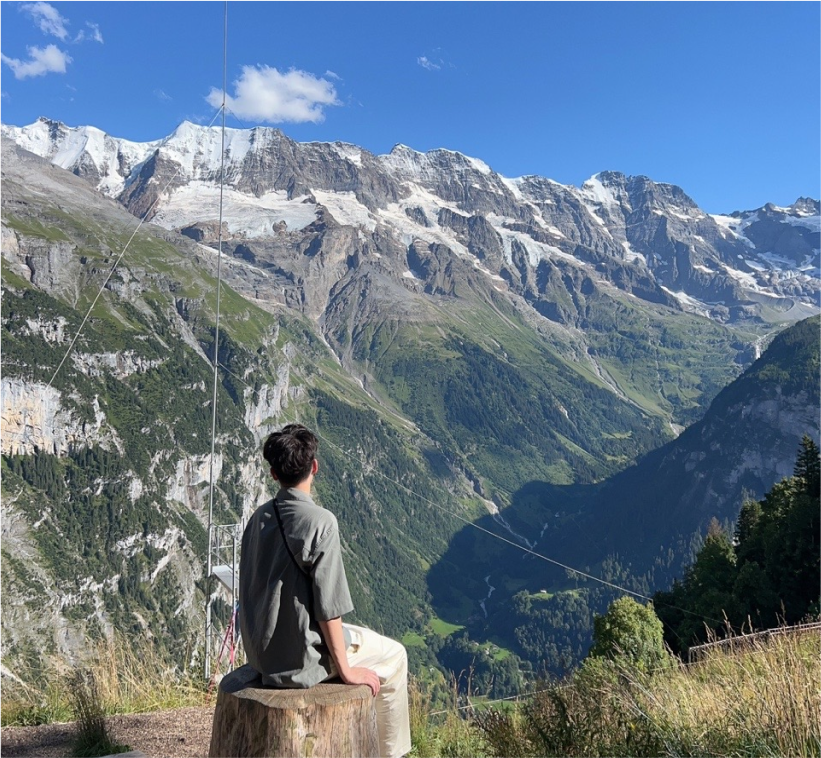

About Me
Hi, I'm Pu! I'm a full-stack developer with a focus on frontend engineering and UX/UI design. I recently graduated with a degree in Computer Science from the University of Washington, and I've spent the past year building AI-based web applications that help promote sustainable lifestyle.
Originally from Bangkok, Thailand, I've been living in Seattle for the past few years. During that time, I've worked on projects ranging from research tools to production-ready e-commerce platforms with secure payments and responsive UIs. I enjoy working on tools that are both practical and intuitive.
Outside of work, I love exploring new places ‚úàÔ∏è, playing games üéÆ, and watching anime. I'm currently looking for full-time opportunities where I can contribute as a full-stack or frontend developer and grow with a mission-driven team.